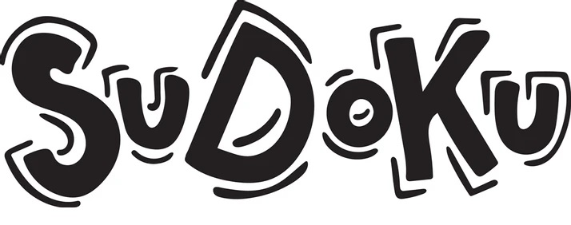

Solução do Sudoku
Projeto feito por Davy Eugenio e Luann Ferreira para disciplina de Analise e Estruturas de Dados
Programadores:
Davy Eugenio

Luann Ferreira
Projeto feito por Davy Eugenio e Luann Ferreira para disciplina de Analise e Estruturas de Dados
Programadores:
Davy Eugenio
Luann Ferreira
-
O objetivo desse projeto é desenvolver um algoritmo que soluciona problemas de Sudoku, utilizando Grafos, em específico o grafo Welsh-Powel. Basicamente o usuário insere uma entrada com valores de 1 a 9, nas casas desejadas, e o algoritmo tentará resolver o sudoku.
É um algoritmo guloso proposto por Welsh-Powel (1975), ele determina a cor do vértice i após os j-1 vértices terem sido coloridos, tendo sempre como propósito minimizar o número de cores necessárias.
Sudoku é um jogo do gênero puzzle (quebra-cabeça), projetado por Howard Gams, um arquiteto e construtor independente de puzzles. O jogo consiste em uma grade de tamanho n × n e n blocos do tamanho n1/2 × n1/2, sendo n = i2 ei ∈ N+.
A grade vem com alguns quadrados já preenchidos, e o objetivo é preencher o restante com números de 1 a 9, sem repetir números nas linhas, colunas ou blocos.
O Sudoku é um tabuleiro com 81 células, associando a grafos, podemos considerar cada célula como um vértice. Dois vértices estão conectados se: eles estão na mesma coluna, fileira ou bloco.com isso teremos as arestas. Com isso, temos um grafo do Sudoku.
Considere agora o Sudoku 9 × 9, onde cada vértice está ligado a outros 20 vértices, pois cada vértice ter cor diferente dos 20 vértices ligados a ele (vértices adjacentes). Com isso, teremos o total de 810 arestas. Veja a figura abaixo para melhor Ilustração:
Para adaptar ao agoritmo proposto, podemos considerar cada número como uma cor diferente, para então ser possível a aplicação da teoria de Coloração de vizinhos. Para solucionar o Sudoku com esse algoritmo, precisa ser garantido que dois vértices da mesma cor não sejam vizinhos.
O algoritmo atribuirá a todos os nós vazios todas as cores possíveis (1-9), para com isso verificar a cor de seus vizinhos e retirando de sua lista de possíveis cores. Com isso, no final podemos atribuir as cores possíveis aos nós e ir completando o taabuleiro.
O Welsh-Powel é um algoritmo que serve para decidir como pintar os nós. Ele verifica o status de um nó para saber se ele já foi pintado ou pode ser pintado. Caso ele precise ser pintado ele verifica os vizinhos para decidir qual a cor.